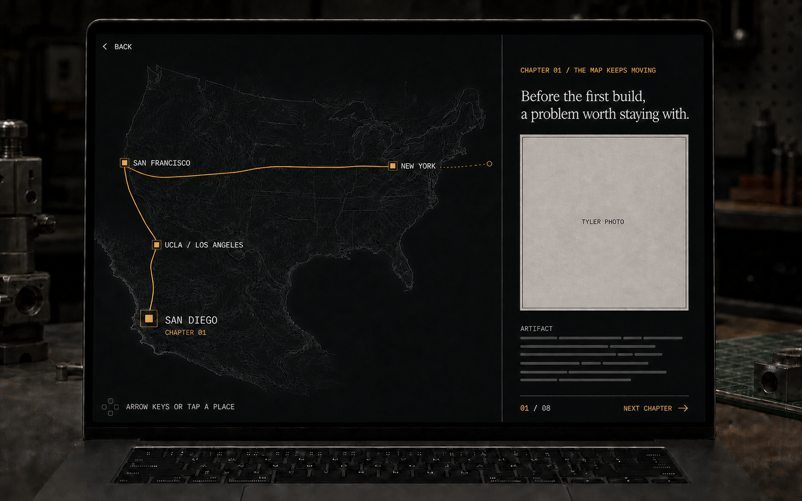
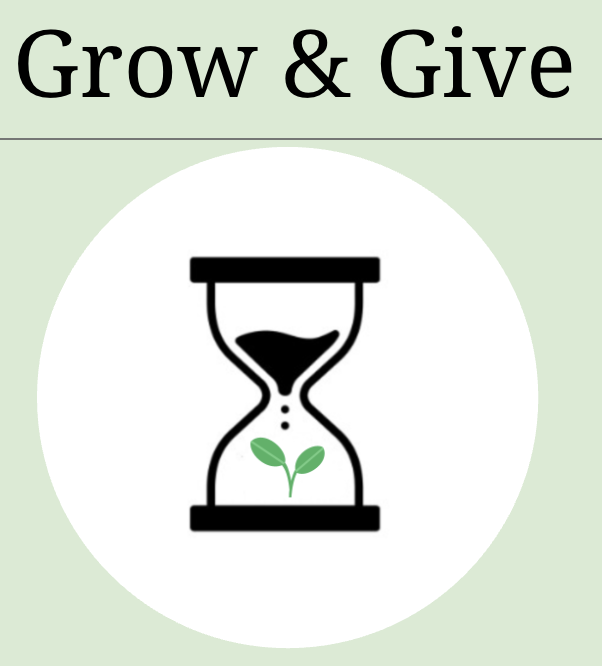

One quiet question
The near-dark display wakes once: “Tyler Xiao?” followed by a single “Learn more” action. Hover and focus reveal the same invitation.
Recommended direction
A short, no-fail autobiographical game hidden inside the Bench. Visitors move through places, memories, and artifacts instead of clicking through a resume carousel.
The place changes. The activities change. Curiosity and practice keep returning.
The winning metaphor is a route, not a slide deck. Early practices in music, language, math, sport, and programming eventually connect to the cities, work, and communities that follow.
The near-dark display wakes once: “Tyler Xiao?” followed by a single “Learn more” action. Hover and focus reveal the same invitation.
A waypoint graph gives the feeling of travel without physics, collision, pathfinding, or a joystick. No story fact is locked behind skill.
Each map leaves one small keepsake in a memory ledger. There is no score, timer, death state, leaderboard, or achievement wall.
The signal-amber route leaves the printed map and enters an uncharted margin. The visitor places the next pin without predicting where it goes.
Decision recorded: repurpose the visually sparse Personal Env laptop as the journey portal. The current source gives it a project texture, so production must deliberately replace that screen state and add a dedicated hit plane above its glass. The rest of the Bench composition stays in place.
Keep the Bench exterior cool-grey and machined. Let the display become a near-black editorial map with one muted signal-amber route. The screen is 68 percent map and 32 percent story record.

Screen #0F1113, story surface #171A1D, rules #30353A, type #E3E5E7 and #A6AAAE, accent #C4A55F.
Cormorant or Iowan Old Style for chapter titles, Helvetica Neue for narrative, and IBM Plex Mono or SF Mono for place labels and controls.
One hairline separates map and record. Use square 2-4px corners, dark glass, and no floating frosted cards.
The camera leans in, the map changes scale, and the token moves. Story copy stays still while someone reads it.
This live planning mockup shows the relationship between macro maps and story beats. The final experience uses richer local boards, but the information hierarchy should remain this calm.
I grew up in San Diego. Around eleven or twelve, Scratch games led to Java and competitive programming, but coding shared the week with cello, Chinese after-school, math competitions, and pre-pandemic water polo.
Main path: required biography Side path: optional artifact Read mode: Back and Next always available
The copy below is a first-person draft. Verified details are ready to shape. Confirmation labels mark the places where the story needs Tyler's memory or a choice between conflicting sources.
| Map | Required beats | Emotional move | Persistent verb |
|---|---|---|---|
| San Diego | Early practices and first code, Del Norte, first app | Programming takes its place among other interests | Practice / solve / run |
| UCLA | Freshman and sophomore years, Scale, UPE, building | Individual skill becomes shared work | Study / lead |
| San Francisco | SafetyKit and first startup-engineering summer | Projects become production responsibility | Ship |
| New York | Ramp and Codex community | Building and gathering people merge | Build / gather |
| Horizon | Known next step and open future | Certainty makes room for possibility | Continue |
Tyler Xiao?
The short answer fits on this screen. The longer one starts
in San Diego.
Learn more.
I grew up in San Diego. Around eleven or twelve, I made games in Scratch, then moved into Java for competitive programming. Around the same time, I went to Chinese after-school classes and math competitions. I also spent a lot of time playing cello, and before the pandemic I played water polo. Programming mattered, but it was not the whole story.
In high school, I kept two practices running at once. Cross-country and track taught me pace; the Math and Algorithmic Coding clubs taught me how to help a group keep moving. I learned that leadership was less about having the fastest answer and more about making it easier for other people to continue.
Grow & Give turned focused minutes into progress inside an app and support for real nonprofits. Building it meant making choices for someone besides me: what to show, what to store, and what to make easy. A running app was only the beginning.
I came to UCLA in 2024 to study computer science. [One academic moment that changed how I approached the work.] [One community moment that changed who I built with.] I kept playing cello in the Symphony Orchestra, so programming was still not the only practice in my week.
After freshman year, the route moved north. SafetyKit was my first startup-engineering summer and my first time spending months in San Francisco. I worked on trust-and-safety systems where a pipeline could fail and a reviewer could lose trust. The details mattered because people used the system.
I wanted technical work to happen in person, too. As a Codex Ambassador, I began hosting campus demos, workshops, and build sessions. Builders brought projects, compared notes, and made things together. The same thread followed me to New York, where I helped organize and judge Ramp's Builders Cup.
This summer brought me to New York and Ramp's Reimbursements team. New city, larger system, same question: what would make this workflow genuinely useful to the person depending on it? Building and gathering people started to feel like parts of the same job.
One next step is already planned. The rest is not. I want to keep building AI systems that become genuinely useful inside companies, and keep bringing the people using those systems into the same room. The map ends here because the story does not.
Keep Three.js responsible for the physical invitation and camera move. The readable experience expands into semantic HTML and SVG. This protects legibility, keyboard access, mobile, and the Bench's demand-rendered performance model.
A quiet power glow. Hover or focus wakes the question.
The camera leans toward the display. A real DOM twin appears.
Move to a connected landmark or use Back and Next in read mode.
One concrete memory, one visual artifact, one keepsake per map.
Restore the prior view and focus. Same action works with Escape.
Tap a connected node; arrows or WASD choose an adjacent node; Enter or Space opens it; Tab reaches every landmark.
A visible read-only mode opens each beat with Back and Next. The map stays as context, never as a gate.
If map art fails, chapter copy remains. Invalid progress resets safely. “Show me” reveals the required landmark.
Replace route draws, parallax, and camera arcs with immediate states or short opacity dissolves.
The map, read-only presentation, and screen-reader chronology must derive from one typed record. Do not scatter biographical copy across Three.js textures, JSX panels, and mobile fallbacks.
type JourneyBeat = {
id: string;
mapId: 'san-diego' | 'ucla' | 'san-francisco' | 'new-york' | 'horizon';
title: string;
period: string;
story: string[];
artifactIds: string[];
interactionId: string;
nextId: string | null;
editorialStatus: 'confirmed' | 'needs-tyler' | 'source-conflict';
sourceNotes: string[];
};
type JourneyState =
| { status: 'closed' }
| { status: 'screen'; phase: 'waking' | 'ready' }
| { status: 'chapter'; mode: 'explore' | 'read'; beatId: string; nodeId: string }
| { status: 'index'; returnTo: string }
| { status: 'ending'; keepsakes: string[] }
| { status: 'error'; recoverTo: 'story' | 'index' };
Lowest-risk routing choice for the final PR:
build a canonical /journey route and reuse the same
component in a full-viewport Bench overlay. Save Next.js
intercepted parallel routing for a follow-up unless the direct
route and overlay are already stable.
The repository already holds useful anchors. Production should add Tyler-owned photos and documents rather than asking generated scenes to impersonate his life.
Existing portrait

Grow & Give artifact

UCLA mark
SafetyKit mark
Scratch game screenshot, cello program or score, a page from Chinese school or a math competition, pre-pandemic water polo photo, and a running bib or team photo.
Campus, UPE, Symphony, project-team, or tutoring image that carries an actual memory.
SafetyKit San Francisco and Ramp New York photos cleared for public use.
Codex event photos or posters from UCLA, Sundays in LA, or Builders Cup.
The draft deliberately separates Tyler's direct brief, self-authored site copy, canonical repository data, public posts, and open questions. Metrics belong in optional artifacts, not the main voice.
| Source | Safe use | Boundary |
|---|---|---|
| Tyler's direct brief and follow-up | San Diego; Scratch games followed by Java competitive programming around age eleven or twelve; Chinese after-school, math competitions, cello, pre-pandemic water polo; cross-country leadership; SafetyKit in San Francisco; Ramp in New York; Codex events. | The age is intentionally approximate. Exact competition names, cross-country role, and selected anecdotes remain open. |
| Self-authored introduction | San Diego, Del Norte, cross-country and track, club leadership, UCLA study and involvement. | “Second year” is dated February 2026, not a timeless label. |
| Canonical site content | UCLA, Scale AI, SafetyKit, Ramp, UPE, projects, and current AI developer-experience interest. | Ramp status is stale; SafetyKit and Scale month ranges conflict across files. |
| inGenius USACO history | USACO Silver in eighth grade, Gold in ninth, more than two years of Java study by then. | Corroborates the Java competition sequence, but not Scratch or Tyler's broader childhood activities. |
| Official Grow & Give abstract | Swift and MongoDB app, productivity flow, nonprofit incentive, user study. | Tyler should choose whether this is the “first app” chapter. |
| SafetyKit reflection | Projects shipped and first time spending months in San Francisco. | Call it the first startup-engineering summer, not first internship overall. |
| OpenAI ambassador directory and public event pages | Codex Ambassador role and co-hosted UCLA workshops. | Community-program role, not OpenAI employment. Event count can change. |
| Ramp announcement | Ramp Reimbursements team in summer 2026. | The public post names Snowflake next, while the repository now names Decagon AI. |
The current repository deliberately replaced Snowflake with Decagon AI. Public LinkedIn pages still advertise Snowflake for fall 2026. The ending should remain employer-neutral until Tyler chooses the current truth and updates the stale surface.
Tyler has chosen the portal and established the early coding origin. The remaining questions change what the game says, not merely how it is polished.
Repurpose its sparse laptop screen. A dedicated screen hit plane opens the journey without making the whole Bench device a second ambiguous control.
Around age eleven or twelve. Programming sits alongside Chinese after-school, math competitions, cello, and pre-pandemic water polo rather than replacing them.
Your exact cross-country role and one moment when leadership stopped meaning “go fastest.”
Choose the project that feels like the first time code became a product for someone else.
Pick one academic change and one community change. The scene should not become a club or coursework inventory.
Resolve Decagon versus Snowflake, then decide whether the employer belongs in the ending at all.
Recommended workshop answer: keep the employer out of the final spoken line. Let the future scene focus on the kind of work and community Tyler wants to keep building. A small optional artifact can name the confirmed next stop later.
Keep each slice independently testable and reversible. Avoid a single all-or-nothing Three.js change at the end of a merge-ready branch.
/journey route, read mode, map, reducer,
mobile, reduced motion, and no-WebGL access.
Unique IDs, reachable graph, bounded coordinates, valid assets, next/previous, restart, and idempotent actions.
Portal mutual exclusion, Escape ordering, click-away ordering, render invalidation, and selection restoration.
Pointer and keyboard entry, direct route, 390px layout, no-WebGL launcher, focus restore, clean console.
The Bench should stay settled while the DOM game is open. Measure idle, route movement, and rapid clicking independently.